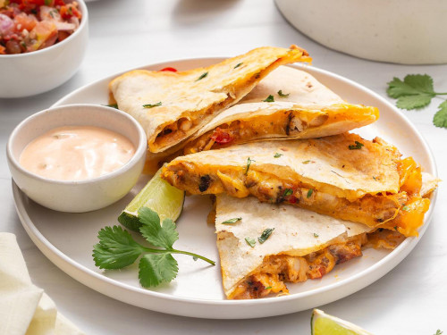

Rotisserie Chicken Quesadilla

Description
Rotisserie chickens from the grocery are underrated for taste in my opinion.
They are even underer-rated for versatility. Yeah, carving up the chicken and serving it with some
veggies is nice and traditional, but why play by the rules? It's your chicken, your allowed to enjoy anyway
way you like... And i do mean any way ;). But today you'll learn how to marry it with one of my
favorite dishes - the quesadilla! Let's get started!
Ingredients
- 1 store bought rotisserie chicken
- 1/4 whole onion
- olive oil
- butter
- 1 tortilla
- cheese(s) of choice
Steps
- preheat skillet with olive oil on medium heat
- dice up onion
- pick a section of rotisserie chicken (breast, thigh, etc.) and carve out chunk of desired size
- dice chunked into bite-sized pieces
- place onion into heated skillet and saute until starting to brown
- add chicken chunks into skillet with onion, saute until desired crispyness
- move chicken/onion mix into a bowl
- keep skillet heated and add butter
- place tortilla into skillet
- add layer of cheese to whole tortilla
- add chicken/onion mix onto half of tortilla
- once cheese starts to melt, flip half of tortilla without chicken onto the other half
- grill until cheese is completely melted and one side of tortilla is at desired crispyness
- flip and grill until other side is at desired crispyness
- Enjoy!